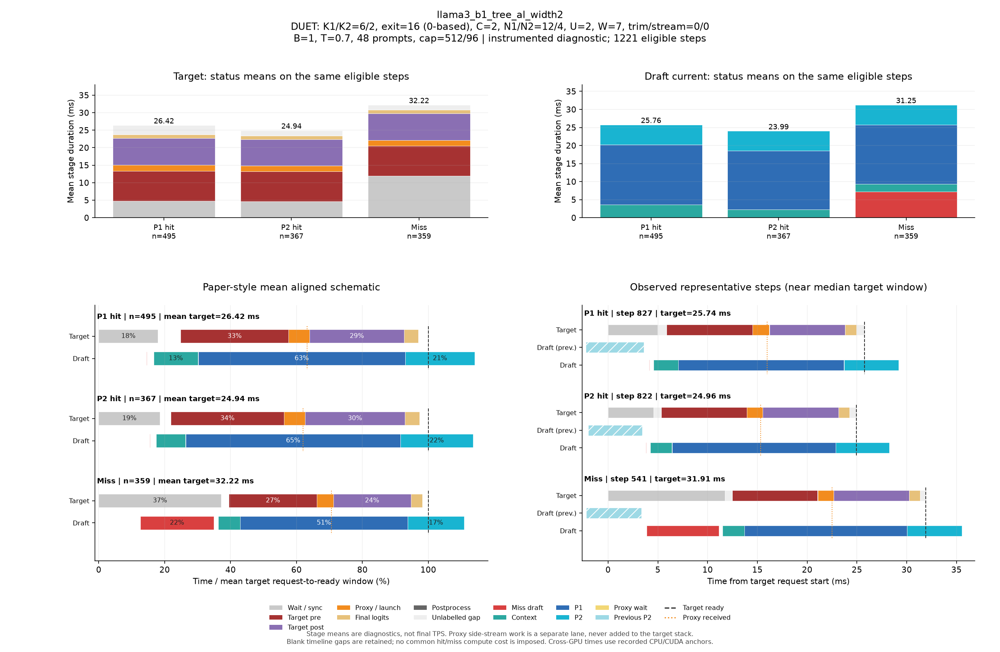

DUET: K1/K2=6/2, exit=16 (0-based), C=2, N1/N2=12/4, U=2, W=7, trim/stream=0/0
| Pass | 용도 | N | B | T | Seed | AL* | Cache hit | TPS* | Raw TPS |
|---|---|---|---|---|---|---|---|---|---|
| 0 | profile-diagnostic | 48 | 1 | 0.7 | 5100 | 2.828 | 70.38% | 79.57 | 78.12 |
Input/output cap: 512/96 · GPUs: 4,5 · draft seed: 0 · source: 81ea7775bbda8fed1e0edc00a612ee3d8bb3f3ae
PNG · 벡터 PDF · 원본 결과 JSON
세부 trace: 1221 eligible steps. Target 원본 · Draft 원본
제외 수: {"initial": 19, "output_boundary": 44, "capture_or_next": 16}
왼쪽 아래는 상태별 평균 정렬 schematic, 오른쪽 아래는 실제 대표 step입니다. %의 분모는 각 상태의 평균 target request→ready 시간이며 phase overlap은 별도 lane에 표시합니다.

{
"args": {
"target": "/data/chokwans99/models/layerskip-llama3-8B",
"draft": "/home/chokwans99/models_mlsys/Qwama-0.5B-Instruct",
"mode": "duet-tree",
"batches": [
1
],
"temperatures": [
0.7
],
"seeds": [
5100
],
"target_tp": 1,
"prompts": "/home/chokwans99/PSD-mlsys-coverage/results/mlsys_coverage/round5/tuning48.json",
"limit": 0,
"max_new_tokens": 96,
"max_model_len": 2048,
"input_cap": 512,
"k1": 6,
"k2": 2,
"draft_fan_out": 2,
"proxy_fan_out": 1,
"p1_tree": true,
"p1_verify_nodes": null,
"p2_verify_nodes": null,
"exit_layer": 16,
"p1_nodes": 12,
"p2_nodes": 4,
"tree_width": 2,
"p1_roots": 2,
"p2_budget": null,
"tree_root_count": null,
"tree_beta": 0.5,
"tree_proxy_threshold": 0.01,
"tree_conf_threshold": 0.03,
"root_source": "complement",
"root_normalization": "full",
"root_overlap_mix": 0.25,
"memory_fraction": 0.45,
"ignore_eos": false,
"greedy_only": false,
"audit_preemption": false,
"ragged_limits": false,
"tree_calibration_dir": null,
"preflight_test": null,
"output": "/home/chokwans99/PSD-mlsys-coverage/results/mlsys_coverage/round5/llama3_b1_tree/llama3_b1_tree_al_width2.json"
},
"engine_kwargs": {
"num_gpus": 2,
"max_num_seqs": 1,
"max_model_len": 2048,
"max_num_batched_tokens": 2048,
"gpu_memory_utilization": 0.45,
"speculate": true,
"draft_async": true,
"greedy_only": false,
"jit_speculate": true,
"speculate_k": 8,
"async_fan_out": 3,
"duet_p1_tree_policy": "on",
"duet_p2_tree_policy": "on",
"draft": "/home/chokwans99/models_mlsys/Qwama-0.5B-Instruct",
"duet_enabled": true,
"duet_exit_layer": 16,
"duet_phase1_k": 6,
"duet_phase2_k": 2,
"duet_draft_fan_out": 2,
"duet_p2_tree_max_nodes": 4,
"duet_p2_tree_verify_nodes": 4,
"duet_p1_tree_max_nodes": 12,
"duet_p1_tree_verify_nodes": 12,
"duet_tree_c_tensor": 2,
"duet_p1_roots_per_position": 2,
"duet_p2_budget": null,
"duet_tree_root_count": null,
"duet_tree_beta": 0.5,
"duet_tree_proxy_threshold": 0.01,
"duet_tree_conf_threshold": 0.03,
"duet_root_source": "complement",
"duet_root_normalization": "full",
"duet_root_overlap_mix": 0.25
},
"env": {
"CUDA_VISIBLE_DEVICES": "4,5",
"SSD_CUDA_ARCH": "8.9",
"SSD_ATTN_BACKEND": "auto",
"SSD_DIST_PORT": "30818",
"OMP_NUM_THREADS": "4",
"SSD_SEED": "0",
"SSD_CHAIN_PROXY_GRAPH": "1",
"SSD_FAST_VERIFY": "1",
"SSD_BATCHED_PROXY_GRAPH": "1",
"SSD_DUET_EXIT_REPLICA": "0",
"SSD_ASYNC_PROXY_SEND": "1",
"SSD_PROXY_STREAM": "0",
"SSD_BATCHED_TREE": "1",
"SSD_TREE_EXPANSION_POLICY": "reach_gain_frontier",
"SSD_TREE_REACH_CALIBRATION": "/home/chokwans99/PSD-mlsys-coverage/results/mlsys_coverage/round4/calibration/reach.json",
"SSD_TREE_GAIN_CALIBRATION": "/home/chokwans99/PSD-mlsys-coverage/results/mlsys_coverage/round4/calibration/gain.json",
"SSD_DUET_MISS_K": "4",
"SSD_TREE_FUSED_MATH": "1",
"SSD_BATCH_TREE_BULK_EXPORT": "1",
"SSD_TREE_PARALLEL_INSERT": "0",
"SSD_PROFILE_DUET": "1",
"SSD_PROFILE_DUET_MAX_EVENTS": "100000",
"SSD_TREE_SHAPE_METRICS": "1",
"SSD_PROFILE_DIR": "/home/chokwans99/PSD-mlsys-coverage/results/mlsys_coverage/round5/profiles/llama3_b1_tree_al_width2",
"SSD_HF_CACHE": "/data/chokwans99/models",
"SSD_DATASET_DIR": "/home/chokwans99/PSD-mlsys-coverage/results/mlsys_coverage/round5"
},
"effective_features": {
"fast_verify": true,
"batched_proxy_graph": true,
"exit_replica": false,
"jit_speculate": true,
"duet_jit_short": true,
"miss_depth": 4,
"miss_width": 1,
"tree_fused_math": true,
"tree_parallel_insert": false,
"bulk_export": true
},
"resolved_env": {
"SSD_CUDA_ARCH": "8.9",
"SSD_ATTN_BACKEND": "auto",
"SSD_DIST_PORT": "30818",
"SSD_SEED": "0",
"SSD_CHAIN_PROXY_GRAPH": "1",
"SSD_FAST_VERIFY": "1",
"SSD_BATCHED_PROXY_GRAPH": "1",
"SSD_DUET_EXIT_REPLICA": "0",
"SSD_ASYNC_PROXY_SEND": "1",
"SSD_PROXY_STREAM": "0",
"SSD_BATCHED_TREE": "1",
"SSD_TREE_EXPANSION_POLICY": "reach_gain_frontier",
"SSD_TREE_REACH_CALIBRATION": "/home/chokwans99/PSD-mlsys-coverage/results/mlsys_coverage/round4/calibration/reach.json",
"SSD_TREE_GAIN_CALIBRATION": "/home/chokwans99/PSD-mlsys-coverage/results/mlsys_coverage/round4/calibration/gain.json",
"SSD_DUET_MISS_K": "4",
"SSD_TREE_FUSED_MATH": "1",
"SSD_BATCH_TREE_BULK_EXPORT": "1",
"SSD_TREE_PARALLEL_INSERT": "0",
"SSD_PROFILE_DUET": "1",
"SSD_PROFILE_DUET_MAX_EVENTS": "100000",
"SSD_TREE_SHAPE_METRICS": "1",
"SSD_PROFILE_DIR": "/home/chokwans99/PSD-mlsys-coverage/results/mlsys_coverage/round5/profiles/llama3_b1_tree_al_width2",
"SSD_HF_CACHE": "/data/chokwans99/models",
"SSD_DATASET_DIR": "/home/chokwans99/PSD-mlsys-coverage/results/mlsys_coverage/round5",
"SSD_FORCE_SPLIT_K1K2": "1",
"SSD_DUET_JIT_SHORT": "1",
"SSD_SHM_NAME": "ssd_2632589"
},
"runtime_source_sha256": {
"ssd/ssd/__init__.py": "f1a221b38f55b42ef0619cba48a411acbbd1965c4845b4643f77443b7ce77950",
"ssd/ssd/config.py": "865ddb5e09ec11f4bc8511dad3f5abad39a6ab412cf0bbcd6213179b5245fa31",
"ssd/ssd/engine/block_manager.py": "05d873619b419d31f47b4be4025bc7c9f11759f5f0bc3f65fbff3a1e8f94660a",
"ssd/ssd/engine/draft_runner.py": "8cb7e22f725de2c0d9c85912ae04f88f1674f34c0cee4b5beccc9a3b5be1c174",
"ssd/ssd/engine/helpers/batch_tree_common.py": "739feeb975c20d0adbdae51735b8983aa6cae8b59d6237b285db0c766d558f27",
"ssd/ssd/engine/helpers/batch_tree_draft.py": "f361030685350183884cc55b9058945515bb00da53fc86541f7902bfd2138528",
"ssd/ssd/engine/helpers/batch_tree_forward.py": "0c6079d2bdbf7ecc000b2a98b94b49b1942939d34ada80b15f57510de8a20940",
"ssd/ssd/engine/helpers/batch_tree_inputs.py": "c0a05d13ba0e63ecbc920425ddd6a98dc60001d93d73085e75d2d4a9b110a066",
"ssd/ssd/engine/helpers/batch_tree_roots.py": "ad3c4e772392c1043284ac4912d606543f3fd76167135b73e4f72a700e6820c7",
"ssd/ssd/engine/helpers/batch_tree_sampling.py": "46f36658cb189bc080ae0d4b8561f84662290facacccf6600f129eb6e93ee66b",
"ssd/ssd/engine/helpers/batch_tree_verify.py": "2da945efe3ba4b2673377a2f5c497528ab0c6cf4d7fd7edfbdb23b6c9c619ede",
"ssd/ssd/engine/helpers/batched_proxy.py": "6ed4f9b85ff8cf9c24b7ad43a1b7377d08123eeef5307366a373dacda184da86",
"ssd/ssd/engine/helpers/batched_tree_executor.py": "098d64cad2d20d96091631f6bc91da73b1e893ec400c3431a4ed68d007a9ef45",
"ssd/ssd/engine/helpers/cudagraph_helpers.py": "0436aec61d05d0b79696a48665042e364f3f4c50d853b68dc424e435b54be0c9",
"ssd/ssd/engine/helpers/e0_trace.py": "23ecd9bce2587cbef3f99c8894964c0d9642d33d372bd7be4954a5a2840a142e",
"ssd/ssd/engine/helpers/mask_helpers.py": "8ada4e709a6ab310ee920a7176b3684f89860022fc659442f6cb02ed5fb87d88",
"ssd/ssd/engine/helpers/p1_tree.py": "f48ae6b01e593d2598262b34007a6b58dde9e57e94138dde62f81d5526637398",
"ssd/ssd/engine/helpers/p2_tree.py": "73b0a512d834ab3a4608d9cd898b13b32630dd3b914b49e753c1116ac0640b41",
"ssd/ssd/engine/helpers/p2_tree_executor.py": "cfb04f959fd08baf3819a688a907cac4e3071a2727085ea08ca089b50a21e82e",
"ssd/ssd/engine/helpers/packed_tree_forward.py": "b903d6fe4d1fe18f95f6540f488acf40d469154100239429256eace61b1d7e76",
"ssd/ssd/engine/helpers/packed_verify.py": "a50ff24e93324840783b60102bfaeb3786711f05f64bd897708c779535c1820f",
"ssd/ssd/engine/helpers/root_policy.py": "5e3a8e2f9b2fe43fec52eb9e80fe59cb0d28177122f7e75c823c5ffd20aee718",
"ssd/ssd/engine/helpers/runner_helpers.py": "bfb570d8e018ee296a6c2a8c3c9e75919fd0eb1beb288ceb80121ad116419bf2",
"ssd/ssd/engine/helpers/speculate_types.py": "2929b5f3a176d04b6a4b01f092b224ad733dfda10a647bb73801cd346441ae91",
"ssd/ssd/engine/helpers/tree_expansion_policy.py": "47f818d1b8f284e56813af294723f6a934c3da0502b9ae4e611b54ba6fb85dac",
"ssd/ssd/engine/helpers/tree_fused_math.py": "930a1215363a3b6f878cbc4a71c3f59293f46aa2eab3c4938e5bb51e95868d2e",
"ssd/ssd/engine/helpers/tree_gain_allocation.py": "6f32c6a7b69272c1b42992d95c546bfd3980ccd71af3b3346e9df61977907b6a",
"ssd/ssd/engine/helpers/tree_host_topology.py": "86d0deab4da2932540a108c4c2b3560b8634837e71ba23783375c2001e4cf81c",
"ssd/ssd/engine/helpers/tree_layout.py": "4e5e47c54a4efd5a30ae8c528e1d2d9493d12aa5605c0e65c2f86ba874805be1",
"ssd/ssd/engine/helpers/tree_rerank_gpu.py": "e4a8bff8828f983d6eb407504f87f2a9edf08a1750449fe46565e661f892b734",
"ssd/ssd/engine/helpers/tree_topology_gpu.py": "3a6cf8796faabbe8adef56deedf8956c1cf252a31e0491f3b71a8544bdcf89af",
"ssd/ssd/engine/llm_engine.py": "b0081876ef6470f91fa562acc0317074a85afa9aec8322182bda7749153db00f",
"ssd/ssd/engine/model_runner.py": "5fa9e910f38538c276a151113fc490be9c75ae9af2bf35ba6eaa5513b237a421",
"ssd/ssd/engine/scheduler.py": "52a36e8bb2abc26f775562a39bd95ea6cc8c70650e6193ddaa0fad762afb8ae4",
"ssd/ssd/engine/sequence.py": "6894715ef142074b118bfa3018b10826d2748518e9c8b71291064eb99fae9bd9",
"ssd/ssd/engine/speculator_async.py": "cd16395d5e5d7380d29f5a27e1495b6a40758c0452ce2cb40d996e2c3271c114",
"ssd/ssd/engine/speculator_sync.py": "30487afa7f5027735ebd752ca1a53003f1d56350f503ea91931ef64e7aab115e",
"ssd/ssd/engine/step.py": "525d3022561c9eee96ec076032bb27e281af744feb739ddc17e52344a9cafe8f",
"ssd/ssd/engine/verifier.py": "f6795547f278628312d2dd5ab0a28e9f34489b8e6d02038566a65fa3190a0928",
"ssd/ssd/layers/activation.py": "13d88b460e7610df28c6a7c719dd8bf21c5c59ae0f85c94d505d499215618a82",
"ssd/ssd/layers/attention.py": "bbafa69d9b52dedf81542f2c3227b7f061de11c679a6681a16b0c137ccfc672b",
"ssd/ssd/layers/embed_head.py": "b896a56b908d75c8f30462b0b1a4ce634276ddb41165fdaa0220c55a2ddf7257",
"ssd/ssd/layers/fi_attn.py": "4b0a275d020c1c3ce37f4e2a6c04bff12577d6f11feec7d79959652300fc9a0c",
"ssd/ssd/layers/layernorm.py": "a076c8d2e31d2597119d8504a69afd8711b41a29b5ccb7e1bf111a6c7277400e",
"ssd/ssd/layers/linear.py": "82c096262013516c5f0a43f7c28f23aa6db6b14f52cbe1ce1dacc5f9d5c4b0b6",
"ssd/ssd/layers/rotary_embedding.py": "1bcca21cf5e4d81c11a5c55d59a6033874c4e6a0003cc4ae8e1aa6165976a723",
"ssd/ssd/layers/sampler.py": "df22591a229ae5c2f62d4797707470ebccb8e55f7064577bc24a656ed797f213",
"ssd/ssd/llm.py": "496950f31428f674b70e8e137e029aa16dd82fdc8d8b8cc76f9ebdce86f7f653",
"ssd/ssd/models/eagle3_draft_llama3.py": "0d6e713a419cf884fc85984f9a2a6de520119032075a7c99158e0df7e2faca84",
"ssd/ssd/models/llama3.py": "ac801bd73e999f04a6fc862ca1d49bc94c88315456cfb6cb1215a503bcc5e07d",
"ssd/ssd/models/qwen2.py": "6804e3662a173368632e5f05b9893cc0cd28a61ac9bd25dbe8cd6f387ca0d1ca",
"ssd/ssd/models/qwen3.py": "535495bf69933fd9c677275453b801189e2c3c78a94fcc5133fc65b88c9f69c7",
"ssd/ssd/paths.py": "72c52420daaf6d457c60235617efc3f8b1e3ae208a35f3bc45438adc9d7e01ac",
"ssd/ssd/quant/__init__.py": "a69f0de0a516ba2bf9e13680b75b8f5d538c2eb281b095662ed1515f8b0f8698",
"ssd/ssd/quant/adapter.py": "fbb1ce4a198a585c31b0102555d1f84d18b09b0de1b90a5808d93ec8ff7ac271",
"ssd/ssd/quant/awq_calibrate.py": "116807eca0a3e4e001aa24a3344031416e4060a6c1b2e39f59829fba09484126",
"ssd/ssd/quant/build.py": "37f9c72ac69af213f2720c86faf380b8a46baaad0b98bf5f2e3c7fa9b3fbc43c",
"ssd/ssd/quant/config.py": "080c327b2297d0905f8fddc8d994aa7b9dc1086d7703d951471d48cea8723a1d",
"ssd/ssd/quant/importer.py": "c8990b69bc9e4e152e7e80b7f08f273c6a4652c1f7e95a8247f85e50030f4f92",
"ssd/ssd/quant/init_context.py": "6aa3dc3f6e95d8902fa7244d0010110b6fcf1ffdccedd6eaa389204339fc214f",
"ssd/ssd/quant/io.py": "f44f98a57351ff1063b7423d2f8390a565a30796fd6c3beaeaa8825f906e66b5",
"ssd/ssd/quant/loader.py": "14f901b1f53a3650be7eff497f626469e2b1fbc487202c639d33c8dd4c9047fb",
"ssd/ssd/quant/marlin.py": "4f1996e9f63d7109e92a3a7ec5350069ba67d7659f2149e99b84ca3c6626b241",
"ssd/ssd/quant/marlin_utils.py": "f64ec8d7ec8260556abd21e229567971a928882f14b93d288a6732d55c12fc90",
"ssd/ssd/quant/naming.py": "7ba73900af5e6d6fa2d1907bd2611625fc72f28a1fb9ea4834cd9a45901632d6",
"ssd/ssd/quant/pack.py": "b7dd683b7cdbfbb6f4ce1e13a51a72240a8dc3a35b7ed652dc664d26bb384711",
"ssd/ssd/quant/state.py": "82cb1050a3b1776765df7ad8f6c59c23a86ac8d1d4cc3c974cded7f8e762f806",
"ssd/ssd/sampling_params.py": "7f79868c4ca115bb18e017411a6c5545f354aa858aa0b8076aafb756d0785032",
"ssd/ssd/utils/async_helpers/async_spec_helpers.py": "0d70779098c5051fcba5d3add5ff0b7896139f1b7789babe701a8df6eaa40f24",
"ssd/ssd/utils/async_helpers/duet_policy.py": "1fb3e1ec1c41a9cda5f531f8c732b09145c7d87ea79d74c331b8176f11f22aaf",
"ssd/ssd/utils/async_helpers/nccl_pack.py": "6330e785f3e81acffe25a82061d3098f7834ad3c2d07bb071d79ed9923b18dc1",
"ssd/ssd/utils/async_helpers/tests.py": "6491ced36a2a6f06d8cf411204b1190d2ca0bc700cd0becf79c3f4cd8abcd87e",
"ssd/ssd/utils/context.py": "ce55eb45f00c91412946dd1c96f5c8f972372dd4c8069770c48e120773f301fc",
"ssd/ssd/utils/int8_debug.py": "9a71dbf2b997a9c8d9b776cc3659c8dbf32ce5411eb5cedb4a73368cee60d3d7",
"ssd/ssd/utils/loader.py": "c008eac34810772e8d9f51da896c00867481f3e1a0e6f725e0d06599c0aab59e",
"ssd/ssd/utils/misc.py": "1084b630f174d651b78b01c4ba2dff147f18d3cf52a200704b4b9eab2b72b66c",
"ssd/ssd/utils/quantize.py": "c0ee73d55f3781eba88007325d5e9e53e66ad952e0e8f19143aa8c50bc39f406",
"ssd/ssd/utils/verify.py": "0cf11b9ba19a73e9c39087fccde43071464c6f3b964e00081ebadc747ef142a4",
"ssd/ssd/utils/verify_fast.py": "23b05b7e5032fe72c8f2ef5bd7a69aa874818b08b52ea7fc0344a54c76ea28d9",
"ssd/bench/mlsys_campaign.py": "059b6316ba33e867e1fcf099a8180c186fa70b916692eca386d2a4a347b0f26f",
"ssd/bench/mlsys_coverage.py": "70b2afaf05bbbd5760c2a4f96f801976479209ca1d7a8f9eb8598139e686bdbc",
"ssd/bench/mlsys_greedy_audit.py": "b9815fd03ded7f30f7c0408629782156e73f5ceaab9f0b3b720956f5c00da141",
"ssd/bench/mlsys_preemption_audit.py": "f891ff5a69a59fb8c93e7952f9d48ac16adb7fef074763089f14d4505ecad80d",
"ssd/bench/mlsys_summarize.py": "0235aa2b56eb59c41c429351d77e90e16c52ccdf58c43e3578dd03df0f6095bd",
"ssd/bench/mlsys_tree_observer.py": "8c18248c9ef1953e2e821613099f14d155978540536939288d4fb2aa897c6263",
"ssd/bench/mlsys_verify_bench.py": "3ddc36197874d239f41a1c135570d4d7a0940d615d3d396299bae46e377bce2e"
}
}{
"groups": [
{
"status": "P1 hit",
"n": 495,
"mean_target_ms": 26.41792136635443,
"mean_decode_ms": 26.46587204771361,
"mean_intervals": [
{
"lane": "Draft current",
"label": "Context",
"start": 4.396805320604883,
"end": 7.9526301721129755
},
{
"lane": "Draft current",
"label": "Miss draft",
"start": 3.824224038075919,
"end": 3.869301749720718
},
{
"lane": "Draft current",
"label": "P1",
"start": 7.977882704590306,
"end": 24.555086350681805
},
{
"lane": "Draft current",
"label": "P2",
"start": 24.560341074009134,
"end": 30.136140073429456
},
{
"lane": "Draft current",
"label": "Proxy wait",
"start": 24.556921119882603,
"end": 24.558564514102358
},
{
"lane": "Target",
"label": "Final logits",
"start": 24.489483705193106,
"end": 25.610965128137607
},
{
"lane": "Target",
"label": "Postprocess",
"start": 26.396551455873432,
"end": 26.41792136635443
},
{
"lane": "Target",
"label": "Proxy / launch",
"start": 15.204340258993284,
"end": 16.882668459054194
},
{
"lane": "Target",
"label": "Target post",
"start": 16.884487447353326,
"end": 24.487521683567703
},
{
"lane": "Target",
"label": "Target pre",
"start": 6.561787803245314,
"end": 15.202423640453453
},
{
"lane": "Target",
"label": "Wait / sync",
"start": 0.0,
"end": 4.7445953547352495
}
],
"components": [
{
"lane": "Draft current",
"label": "Context",
"mean_ms": 3.5558248515080924,
"present_steps": 495,
"population": 495
},
{
"lane": "Draft current",
"label": "Miss draft",
"mean_ms": 0.04507771164479882,
"present_steps": 495,
"population": 495
},
{
"lane": "Draft current",
"label": "P1",
"mean_ms": 16.5772036460915,
"present_steps": 495,
"population": 495
},
{
"lane": "Draft current",
"label": "P2",
"mean_ms": 5.5757989994203205,
"present_steps": 495,
"population": 495
},
{
"lane": "Draft current",
"label": "Proxy wait",
"mean_ms": 0.0016433942197549222,
"present_steps": 495,
"population": 495
},
{
"lane": "Target",
"label": "Final logits",
"mean_ms": 1.1214814229445025,
"present_steps": 495,
"population": 495
},
{
"lane": "Target",
"label": "Postprocess",
"mean_ms": 0.021369910481000187,
"present_steps": 495,
"population": 495
},
{
"lane": "Target",
"label": "Proxy / launch",
"mean_ms": 1.6783282000609119,
"present_steps": 495,
"population": 495
},
{
"lane": "Target",
"label": "Target post",
"mean_ms": 7.603034236214378,
"present_steps": 495,
"population": 495
},
{
"lane": "Target",
"label": "Target pre",
"mean_ms": 8.64063583720814,
"present_steps": 495,
"population": 495
},
{
"lane": "Target",
"label": "Unlabelled gap",
"mean_ms": 2.6084764047102493,
"present_steps": 495,
"population": 495
},
{
"lane": "Target",
"label": "Wait / sync",
"mean_ms": 4.7445953547352495,
"present_steps": 495,
"population": 495
}
],
"mean_markers": {
"Final logits": 25.610965128137607,
"Target ready": 26.41792136635443,
"Proxy received": 16.70314703661986
},
"representative": {
"step_id": 827,
"status": "P1 hit",
"target_ms": 25.742187023162842,
"decode_ms": 25.78464988619089,
"source_counts": {
"1": 1
},
"physical_queries": 13,
"max_valid_nodes": 8,
"unlabelled_target_ms": 1.707031011581421,
"intervals": [
{
"label": "Wait / sync",
"start": 0.0,
"end": 4.972656011581421,
"lane": "Target",
"original_label": "target_spec_wait"
},
{
"label": "Target pre",
"start": 5.875,
"end": 14.511718988418579,
"lane": "Target",
"original_label": "batch_target_pre"
},
{
"label": "Proxy / launch",
"start": 14.511718988418579,
"end": 16.19921898841858,
"lane": "Target",
"original_label": "batch_target_proxy"
},
{
"label": "Target post",
"start": 16.203125,
"end": 23.80078101158142,
"lane": "Target",
"original_label": "batch_target_post"
},
{
"label": "Final logits",
"start": 23.804687023162842,
"end": 24.92578101158142,
"lane": "Target",
"original_label": "batch_target_final_logits"
},
{
"label": "Postprocess",
"start": 25.72265601158142,
"end": 25.742187023162842,
"lane": "Target",
"original_label": "target_postprocess"
},
{
"label": "Unlabelled gap",
"start": 4.972656011581421,
"end": 5.875,
"lane": "Target",
"original_label": "derived_gap"
},
{
"label": "Unlabelled gap",
"start": 16.19921898841858,
"end": 16.203125,
"lane": "Target",
"original_label": "derived_gap"
},
{
"label": "Unlabelled gap",
"start": 23.80078101158142,
"end": 23.804687023162842,
"lane": "Target",
"original_label": "derived_gap"
},
{
"label": "Unlabelled gap",
"start": 24.92578101158142,
"end": 25.72265601158142,
"lane": "Target",
"original_label": "derived_gap"
},
{
"label": "Miss draft",
"start": 4.108237981796265,
"end": 4.151206970214844,
"lane": "Draft current",
"original_label": "batch_miss_draft"
},
{
"label": "Context",
"start": 4.5848000049591064,
"end": 7.0496439933776855,
"lane": "Draft current",
"original_label": "batch_glue"
},
{
"label": "P1",
"start": 7.0691750049591064,
"end": 23.698081970214844,
"lane": "Draft current",
"original_label": "batch_p1_total"
},
{
"label": "Proxy wait",
"start": 23.701987981796265,
"end": 23.701987981796265,
"lane": "Draft current",
"original_label": "batch_proxy_wait"
},
{
"label": "P2",
"start": 23.701987981796265,
"end": 29.194175004959106,
"lane": "Draft current",
"original_label": "batch_p2_total"
}
],
"previous": [
{
"label": "Previous P2",
"start": -2.2276999950408936,
"end": 3.5730819702148438,
"lane": "Draft previous",
"original_label": "batch_p2_total"
}
],
"markers": {
"Target ready": 25.742187023162842,
"Final logits": 24.92578101158142,
"Proxy received": 15.994956970214844
}
},
"step_ids": [
20,
28,
30,
31,
33,
35,
39,
40,
41,
43,
44,
45,
49,
51,
54,
58,
61,
66,
68,
70,
80,
81,
89,
92,
93,
95,
96,
97,
103,
104,
109,
121,
123,
125,
126,
128,
130,
132,
133,
135,
137,
144,
145,
146,
152,
154,
157,
159,
160,
164,
166,
173,
174,
179,
186,
187,
188,
192,
194,
197,
207,
216,
217,
221,
222,
223,
224,
229,
230,
234,
238,
239,
240,
242,
243,
244,
246,
250,
251,
261,
272,
273,
277,
284,
287,
291,
294,
299,
302,
303,
307,
309,
312,
313,
316,
319,
321,
323,
325,
329,
330,
334,
339,
341,
342,
345,
351,
352,
353,
355,
360,
361,
363,
370,
374,
378,
384,
387,
388,
392,
394,
395,
396,
397,
409,
414,
423,
424,
425,
427,
434,
437,
438,
439,
440,
441,
442,
443,
444,
445,
448,
449,
450,
455,
460,
463,
466,
472,
473,
474,
475,
476,
481,
484,
486,
487,
488,
502,
503,
504,
505,
507,
508,
509,
510,
511,
512,
517,
522,
524,
526,
527,
538,
540,
543,
546,
547,
550,
553,
554,
555,
556,
560,
561,
563,
564,
565,
568,
572,
573,
575,
577,
578,
582,
583,
587,
588,
592,
595,
598,
601,
602,
607,
609,
612,
615,
616,
619,
621,
622,
623,
625,
626,
627,
628,
630,
631,
632,
633,
636,
639,
640,
641,
642,
647,
651,
653,
655,
659,
660,
662,
664,
666,
667,
671,
672,
673,
674,
681,
682,
688,
690,
692,
693,
694,
695,
698,
699,
700,
703,
704,
705,
714,
717,
719,
724,
728,
729,
730,
732,
733,
735,
740,
745,
746,
749,
753,
757,
760,
761,
762,
764,
765,
766,
767,
768,
771,
772,
775,
780,
797,
802,
805,
806,
807,
810,
811,
812,
813,
814,
817,
824,
825,
826,
827,
828,
829,
832,
834,
835,
837,
838,
839,
840,
843,
844,
845,
853,
859,
864,
866,
872,
875,
876,
878,
881,
882,
884,
886,
888,
893,
895,
897,
901,
903,
906,
909,
910,
913,
914,
917,
918,
919,
926,
928,
937,
939,
941,
943,
947,
948,
949,
953,
954,
955,
956,
958,
959,
965,
966,
969,
970,
971,
972,
973,
978,
979,
981,
983,
984,
987,
992,
994,
997,
999,
1000,
1012,
1013,
1019,
1021,
1022,
1025,
1026,
1027,
1029,
1030,
1031,
1032,
1034,
1035,
1036,
1037,
1038,
1039,
1040,
1041,
1047,
1048,
1051,
1059,
1061,
1064,
1065,
1066,
1067,
1068,
1069,
1070,
1085,
1089,
1091,
1094,
1095,
1098,
1099,
1102,
1105,
1106,
1110,
1111,
1113,
1117,
1120,
1121,
1122,
1126,
1131,
1133,
1135,
1138,
1139,
1141,
1144,
1146,
1148,
1154,
1155,
1157,
1159,
1161,
1163,
1165,
1167,
1169,
1171,
1172,
1173,
1174,
1175,
1176,
1177,
1183,
1187,
1189,
1190,
1191,
1192,
1195,
1203,
1204,
1205,
1209,
1210,
1215,
1216,
1218,
1221,
1222,
1223,
1224,
1225,
1226,
1228,
1229,
1238,
1239,
1240,
1246,
1247,
1254,
1256,
1260,
1263,
1264,
1268,
1269,
1270,
1273,
1275,
1277,
1281,
1282,
1287,
1288,
1289,
1290,
1291,
1292,
1293,
1294,
1295,
1296,
1297,
1298,
1299
],
"query_shapes": {
"13": 457,
"7": 15,
"3": 23
}
},
{
"status": "P2 hit",
"n": 367,
"mean_target_ms": 24.935604072071875,
"mean_decode_ms": 24.983806601580874,
"mean_intervals": [
{
"lane": "Draft current",
"label": "Context",
"start": 4.342432050029329,
"end": 6.569843411770439
},
{
"lane": "Draft current",
"label": "Miss draft",
"start": 3.8461054605749063,
"end": 3.8907865464524938
},
{
"lane": "Draft current",
"label": "P1",
"start": 6.594760384806495,
"end": 22.814340579087467
},
{
"lane": "Draft current",
"label": "P2",
"start": 22.819674419772074,
"end": 28.318386538476968
},
{
"lane": "Draft current",
"label": "Proxy wait",
"start": 22.816168642823637,
"end": 22.817894258681044
},
{
"lane": "Target",
"label": "Final logits",
"start": 23.156271275122744,
"end": 24.269503323843434
},
{
"lane": "Target",
"label": "Postprocess",
"start": 24.915330417799364,
"end": 24.935604072071875
},
{
"lane": "Target",
"label": "Proxy / launch",
"start": 14.017246824519185,
"end": 15.611197717183293
},
{
"lane": "Target",
"label": "Target post",
"start": 15.613097623518442,
"end": 23.154232997660415
},
{
"lane": "Target",
"label": "Target pre",
"start": 5.449675092255387,
"end": 14.01528970746968
},
{
"lane": "Target",
"label": "Wait / sync",
"start": 0.0,
"end": 4.627611680641486
}
],
"components": [
{
"lane": "Draft current",
"label": "Context",
"mean_ms": 2.22741136174111,
"present_steps": 367,
"population": 367
},
{
"lane": "Draft current",
"label": "Miss draft",
"mean_ms": 0.04468108587758742,
"present_steps": 367,
"population": 367
},
{
"lane": "Draft current",
"label": "P1",
"mean_ms": 16.219580194280972,
"present_steps": 367,
"population": 367
},
{
"lane": "Draft current",
"label": "P2",
"mean_ms": 5.498712118704897,
"present_steps": 367,
"population": 367
},
{
"lane": "Draft current",
"label": "Proxy wait",
"mean_ms": 0.0017256158574075725,
"present_steps": 367,
"population": 367
},
{
"lane": "Target",
"label": "Final logits",
"mean_ms": 1.11323204872069,
"present_steps": 367,
"population": 367
},
{
"lane": "Target",
"label": "Postprocess",
"mean_ms": 0.02027365427251083,
"present_steps": 367,
"population": 367
},
{
"lane": "Target",
"label": "Proxy / launch",
"mean_ms": 1.5939508926641064,
"present_steps": 367,
"population": 367
},
{
"lane": "Target",
"label": "Target post",
"mean_ms": 7.541135374141974,
"present_steps": 367,
"population": 367
},
{
"lane": "Target",
"label": "Target pre",
"mean_ms": 8.565614615214294,
"present_steps": 367,
"population": 367
},
{
"lane": "Target",
"label": "Unlabelled gap",
"mean_ms": 1.4737858064168157,
"present_steps": 367,
"population": 367
},
{
"lane": "Target",
"label": "Wait / sync",
"mean_ms": 4.627611680641486,
"present_steps": 367,
"population": 367
}
],
"mean_markers": {
"Final logits": 24.269503323843434,
"Target ready": 24.935604072071875,
"Proxy received": 15.446117970209356
},
"representative": {
"step_id": 822,
"status": "P2 hit",
"target_ms": 24.95703101158142,
"decode_ms": 25.02618613652885,
"source_counts": {
"2": 1
},
"physical_queries": 7,
"max_valid_nodes": 4,
"unlabelled_target_ms": 1.441406011581421,
"intervals": [
{
"label": "Wait / sync",
"start": 0.0,
"end": 4.578125,
"lane": "Target",
"original_label": "target_spec_wait"
},
{
"label": "Target pre",
"start": 5.335937023162842,
"end": 13.945312023162842,
"lane": "Target",
"original_label": "batch_target_pre"
},
{
"label": "Proxy / launch",
"start": 13.945312023162842,
"end": 15.550781011581421,
"lane": "Target",
"original_label": "batch_target_proxy"
},
{
"label": "Target post",
"start": 15.550781011581421,
"end": 23.136718034744263,
"lane": "Target",
"original_label": "batch_target_post"
},
{
"label": "Final logits",
"start": 23.136718034744263,
"end": 24.25390601158142,
"lane": "Target",
"original_label": "batch_target_final_logits"
},
{
"label": "Postprocess",
"start": 24.9375,
"end": 24.95703101158142,
"lane": "Target",
"original_label": "target_postprocess"
},
{
"label": "Unlabelled gap",
"start": 4.578125,
"end": 5.335937023162842,
"lane": "Target",
"original_label": "derived_gap"
},
{
"label": "Unlabelled gap",
"start": 24.25390601158142,
"end": 24.9375,
"lane": "Target",
"original_label": "derived_gap"
},
{
"label": "Miss draft",
"start": 3.8074560165405273,
"end": 3.8465189933776855,
"lane": "Draft current",
"original_label": "batch_miss_draft"
},
{
"label": "Context",
"start": 4.2566750049591064,
"end": 6.420737981796265,
"lane": "Draft current",
"original_label": "batch_glue"
},
{
"label": "P1",
"start": 6.4441750049591064,
"end": 22.858237981796265,
"lane": "Draft current",
"original_label": "batch_p1_total"
},
{
"label": "Proxy wait",
"start": 22.862143993377686,
"end": 22.862143993377686,
"lane": "Draft current",
"original_label": "batch_proxy_wait"
},
{
"label": "P2",
"start": 22.862143993377686,
"end": 28.264487981796265,
"lane": "Draft current",
"original_label": "batch_p2_total"
}
],
"previous": [
{
"label": "Previous P2",
"start": -1.9855120182037354,
"end": 3.4129250049591064,
"lane": "Draft previous",
"original_label": "batch_p2_total"
}
],
"markers": {
"Target ready": 24.95703101158142,
"Final logits": 24.25390601158142,
"Proxy received": 15.342612981796265
}
},
"step_ids": [
22,
23,
24,
27,
29,
34,
38,
48,
52,
53,
55,
57,
59,
60,
65,
67,
77,
78,
79,
83,
87,
88,
90,
91,
94,
98,
99,
100,
101,
105,
108,
110,
115,
117,
119,
122,
127,
136,
141,
147,
149,
158,
161,
162,
163,
167,
183,
185,
198,
199,
201,
202,
203,
204,
205,
206,
209,
210,
211,
212,
213,
214,
227,
232,
233,
236,
237,
241,
245,
248,
249,
256,
257,
262,
263,
264,
265,
266,
267,
268,
269,
270,
271,
276,
286,
290,
292,
295,
300,
301,
304,
305,
306,
308,
310,
311,
314,
317,
318,
324,
326,
327,
328,
331,
332,
338,
340,
343,
344,
346,
348,
349,
350,
354,
357,
358,
367,
369,
372,
376,
377,
381,
382,
389,
390,
391,
398,
399,
400,
401,
402,
403,
404,
405,
406,
407,
408,
411,
412,
413,
418,
420,
422,
428,
432,
435,
436,
446,
454,
456,
461,
470,
477,
480,
492,
496,
501,
506,
515,
520,
521,
525,
529,
530,
533,
535,
536,
542,
548,
557,
559,
562,
567,
570,
571,
576,
589,
591,
593,
594,
597,
603,
608,
624,
629,
637,
638,
644,
652,
654,
658,
669,
677,
678,
686,
687,
689,
697,
701,
702,
708,
710,
721,
725,
727,
731,
734,
737,
738,
739,
742,
747,
748,
751,
752,
758,
769,
770,
773,
776,
777,
778,
779,
781,
782,
783,
788,
790,
794,
796,
799,
800,
801,
804,
808,
809,
815,
816,
818,
821,
822,
823,
830,
831,
836,
841,
842,
846,
854,
855,
856,
857,
858,
860,
861,
865,
868,
871,
874,
877,
880,
883,
889,
892,
894,
896,
899,
902,
915,
920,
922,
923,
924,
927,
933,
934,
936,
938,
940,
945,
950,
951,
952,
962,
967,
968,
980,
985,
986,
988,
990,
991,
993,
995,
998,
1001,
1002,
1005,
1006,
1008,
1009,
1011,
1017,
1020,
1024,
1033,
1045,
1049,
1050,
1052,
1053,
1054,
1058,
1062,
1063,
1071,
1073,
1074,
1077,
1078,
1081,
1088,
1103,
1104,
1107,
1112,
1114,
1118,
1124,
1127,
1128,
1132,
1140,
1151,
1158,
1162,
1164,
1166,
1178,
1196,
1201,
1202,
1206,
1211,
1213,
1214,
1232,
1233,
1234,
1235,
1236,
1237,
1241,
1242,
1244,
1245,
1252,
1253,
1257,
1259,
1265,
1272,
1274,
1279,
1280,
1283,
1284
],
"query_shapes": {
"7": 326,
"3": 41
}
},
{
"status": "Miss",
"n": 359,
"mean_target_ms": 32.22160218353059,
"mean_decode_ms": 32.275357261601016,
"mean_intervals": [
{
"lane": "Draft current",
"label": "Context",
"start": 11.671507831403472,
"end": 13.814442325103249
},
{
"lane": "Draft current",
"label": "Miss draft",
"start": 4.052772512674996,
"end": 11.246745324732533
},
{
"lane": "Draft current",
"label": "P1",
"start": 13.816978935411713,
"end": 30.19454954460803
},
{
"lane": "Draft current",
"label": "P2",
"start": 30.199909750797623,
"end": 35.73201802181998
},
{
"lane": "Draft current",
"label": "Proxy wait",
"start": 30.196421079316842,
"end": 30.198062711439427
},
{
"lane": "Target",
"label": "Final logits",
"start": 30.50696379627026,
"end": 31.621125043268655
},
{
"lane": "Target",
"label": "Postprocess",
"start": 32.199772327391216,
"end": 32.22160218353059
},
{
"lane": "Target",
"label": "Proxy / launch",
"start": 21.32844872859859,
"end": 22.93043554393694
},
{
"lane": "Target",
"label": "Target post",
"start": 22.93246622072289,
"end": 30.505010667949666
},
{
"lane": "Target",
"label": "Target pre",
"start": 12.726925663297223,
"end": 21.32642488293661
},
{
"lane": "Target",
"label": "Wait / sync",
"start": 0.0,
"end": 11.958025503955511
}
],
"components": [
{
"lane": "Draft current",
"label": "Context",
"mean_ms": 2.142934493699778,
"present_steps": 359,
"population": 359
},
{
"lane": "Draft current",
"label": "Miss draft",
"mean_ms": 7.193972812057537,
"present_steps": 359,
"population": 359
},
{
"lane": "Draft current",
"label": "P1",
"mean_ms": 16.377570609196315,
"present_steps": 359,
"population": 359
},
{
"lane": "Draft current",
"label": "P2",
"mean_ms": 5.532108271022361,
"present_steps": 359,
"population": 359
},
{
"lane": "Draft current",
"label": "Proxy wait",
"mean_ms": 0.0016416321225817157,
"present_steps": 359,
"population": 359
},
{
"lane": "Target",
"label": "Final logits",
"mean_ms": 1.1141612469983964,
"present_steps": 359,
"population": 359
},
{
"lane": "Target",
"label": "Postprocess",
"mean_ms": 0.021829856139371655,
"present_steps": 359,
"population": 359
},
{
"lane": "Target",
"label": "Proxy / launch",
"mean_ms": 1.6019868153383472,
"present_steps": 359,
"population": 359
},
{
"lane": "Target",
"label": "Target post",
"mean_ms": 7.572544447226777,
"present_steps": 359,
"population": 359
},
{
"lane": "Target",
"label": "Target pre",
"mean_ms": 8.599499219639387,
"present_steps": 359,
"population": 359
},
{
"lane": "Target",
"label": "Unlabelled gap",
"mean_ms": 1.3535550942327983,
"present_steps": 359,
"population": 359
},
{
"lane": "Target",
"label": "Wait / sync",
"mean_ms": 11.958025503955511,
"present_steps": 359,
"population": 359
}
],
"mean_markers": {
"Final logits": 31.621125043268655,
"Target ready": 32.22160218353059,
"Proxy received": 22.761789524455587
},
"representative": {
"step_id": 541,
"status": "Miss",
"target_ms": 31.91015601158142,
"decode_ms": 31.956437043845654,
"source_counts": {
"0": 1
},
"physical_queries": 7,
"max_valid_nodes": 4,
"unlabelled_target_ms": 1.259765863418579,
"intervals": [
{
"label": "Wait / sync",
"start": 0.0,
"end": 11.753906011581421,
"lane": "Target",
"original_label": "target_spec_wait"
},
{
"label": "Target pre",
"start": 12.455077886581421,
"end": 21.05078101158142,
"lane": "Target",
"original_label": "batch_target_pre"
},
{
"label": "Proxy / launch",
"start": 21.054687023162842,
"end": 22.65429711341858,
"lane": "Target",
"original_label": "batch_target_proxy"
},
{
"label": "Target post",
"start": 22.65625,
"end": 30.22265601158142,
"lane": "Target",
"original_label": "batch_target_post"
},
{
"label": "Final logits",
"start": 30.224608898162842,
"end": 31.337889909744263,
"lane": "Target",
"original_label": "batch_target_final_logits"
},
{
"label": "Postprocess",
"start": 31.88867211341858,
"end": 31.91015601158142,
"lane": "Target",
"original_label": "target_postprocess"
},
{
"label": "Unlabelled gap",
"start": 11.753906011581421,
"end": 12.455077886581421,
"lane": "Target",
"original_label": "derived_gap"
},
{
"label": "Unlabelled gap",
"start": 21.05078101158142,
"end": 21.054687023162842,
"lane": "Target",
"original_label": "derived_gap"
},
{
"label": "Unlabelled gap",
"start": 22.65429711341858,
"end": 22.65625,
"lane": "Target",
"original_label": "derived_gap"
},
{
"label": "Unlabelled gap",
"start": 30.22265601158142,
"end": 30.224608898162842,
"lane": "Target",
"original_label": "derived_gap"
},
{
"label": "Unlabelled gap",
"start": 31.337889909744263,
"end": 31.88867211341858,
"lane": "Target",
"original_label": "derived_gap"
},
{
"label": "Miss draft",
"start": 3.8953471183776855,
"end": 11.119956970214844,
"lane": "Draft current",
"original_label": "batch_miss_draft"
},
{
"label": "Context",
"start": 11.508627891540527,
"end": 13.694175004959106,
"lane": "Draft current",
"original_label": "batch_glue"
},
{
"label": "P1",
"start": 13.696127891540527,
"end": 30.032066106796265,
"lane": "Draft current",
"original_label": "batch_p1_total"
},
{
"label": "Proxy wait",
"start": 30.034018993377686,
"end": 30.035972118377686,
"lane": "Draft current",
"original_label": "batch_proxy_wait"
},
{
"label": "P2",
"start": 30.037925004959106,
"end": 35.537925004959106,
"lane": "Draft current",
"original_label": "batch_p2_total"
}
],
"previous": [
{
"label": "Previous P2",
"start": -2.1905899047851562,
"end": 3.3582379817962646,
"lane": "Draft previous",
"original_label": "batch_p2_total"
}
],
"markers": {
"Target ready": 31.91015601158142,
"Final logits": 31.337889909744263,
"Proxy received": 22.491050004959106
}
},
"step_ids": [
21,
25,
26,
32,
37,
42,
46,
47,
50,
56,
62,
63,
64,
69,
71,
73,
74,
75,
76,
82,
84,
85,
86,
102,
107,
111,
112,
113,
114,
116,
118,
120,
124,
129,
131,
134,
139,
140,
142,
143,
148,
150,
151,
153,
155,
156,
165,
168,
169,
170,
182,
184,
189,
190,
191,
193,
195,
196,
200,
208,
215,
218,
220,
225,
226,
228,
231,
235,
247,
253,
254,
255,
258,
259,
260,
274,
275,
278,
279,
280,
281,
282,
283,
285,
288,
289,
293,
296,
298,
315,
320,
322,
333,
337,
347,
356,
359,
362,
364,
365,
366,
368,
371,
373,
375,
380,
383,
385,
386,
393,
410,
415,
417,
419,
421,
426,
430,
431,
433,
447,
452,
453,
457,
458,
459,
462,
464,
465,
467,
468,
469,
471,
478,
479,
482,
483,
485,
493,
494,
495,
497,
498,
514,
516,
518,
519,
523,
528,
534,
537,
539,
541,
544,
545,
549,
552,
558,
566,
569,
574,
579,
581,
586,
590,
596,
599,
600,
604,
605,
606,
610,
611,
613,
614,
618,
620,
634,
635,
643,
645,
646,
648,
650,
656,
657,
661,
663,
665,
668,
670,
676,
679,
680,
683,
684,
685,
691,
696,
706,
707,
709,
711,
712,
713,
716,
718,
720,
722,
723,
726,
736,
741,
743,
744,
750,
755,
756,
759,
763,
774,
786,
787,
789,
791,
792,
793,
795,
798,
803,
820,
833,
850,
851,
852,
862,
863,
867,
869,
870,
873,
879,
885,
887,
891,
898,
900,
904,
905,
907,
908,
911,
912,
916,
921,
925,
929,
930,
932,
935,
942,
944,
946,
957,
960,
961,
964,
977,
982,
989,
996,
1003,
1004,
1007,
1010,
1014,
1016,
1018,
1023,
1028,
1043,
1044,
1046,
1055,
1056,
1057,
1060,
1072,
1075,
1076,
1080,
1082,
1083,
1084,
1086,
1087,
1090,
1092,
1093,
1096,
1097,
1100,
1101,
1108,
1109,
1116,
1119,
1123,
1125,
1129,
1130,
1134,
1136,
1137,
1142,
1143,
1145,
1147,
1149,
1150,
1153,
1156,
1160,
1168,
1170,
1180,
1181,
1182,
1184,
1185,
1186,
1188,
1193,
1194,
1197,
1198,
1199,
1200,
1207,
1208,
1212,
1217,
1220,
1227,
1230,
1231,
1243,
1249,
1250,
1251,
1255,
1258,
1261,
1262,
1266,
1267,
1271,
1276,
1278,
1286
],
"query_shapes": {
"7": 359
}
}
],
"excluded": {
"initial": 19,
"output_boundary": 44,
"capture_or_next": 16
},
"eligible_steps": 1221,
"trace_paths": [
"profiles/llama3_b1_tree_al_width2/duet_profile_target_rank0_024459.json",
"profiles/llama3_b1_tree_al_width2/duet_profile_draft_024459.json"
],
"labelled_capture_count": 9,
"max_target_stage_overlap_ms": 0.0,
"detail_labels_present": false
}